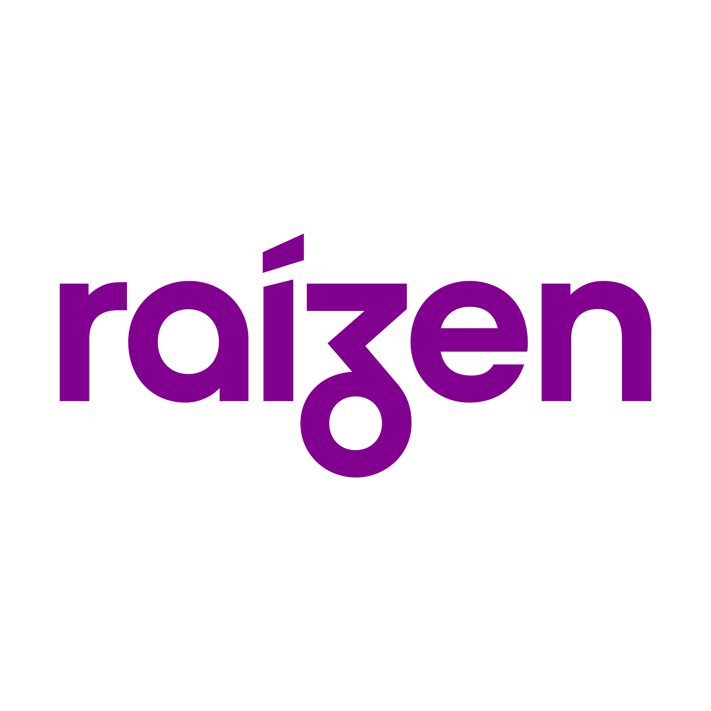

2021
Business Intelligence Intern – SPIRIT (Premium Ceiling Fans Manufacturer) - Brazil
Hybrid - 6-month internship
- Took over the responsibilities of the former Business Analyst after a 3-month training period with him.
- Generated a variety of business reports, including:
- Employee reports (salaries, benefits, taxes, etc.)
- Sales performance reports
- Defective product reports
- Delivery reports for Uber Flash (from physical stores, often for short-distance deliveries)
- Credit card transaction reports
- Predictive reports for high-volume sales periods (e.g., Black Friday)
- Reproduced and visualized some of these reports using Power BI.
- Collaborated with the IT team to explore data-driven solutions for the company.
- Advocated for Business Intelligence adoption across departments, helping others understand its purpose and value.
- Despite the company’s lack of interest in BI at the time, the experience was highly valuable and exposed me to real-world business challenges that go beyond technical training or online courses.


2022
BI Analyst – OWSE - Brazil
Hybrid - 1.5 years, 4 promotions
- Joined as a Trainee BI Analyst and received four promotions over 18 months.
- Worked daily with SQL across various relational databases, such as:
- SQL Server
- Sybase
- Oracle
- PostgreSQL
- Used ETL tools like Pentaho Data Integration and later Apache Hop.
- Created and maintained SQL procedures, built indexes, and applied optimization techniques for data ingestion and transformation.
- Worked with agile methodologies, version control using Git (GitLab), and CI/CD pipelines with Jenkins.
- Monitored and improved data pipelines and monitoring using Grafana, reducing long-running processes from days or hours to minutes.
- Supported analysts by maintaining Power BI dashboards and creating new ones from scratch based on client requirements.


2023

Data Engineer – Accenture - Brazil
Remote - 7-month project
- Initially joined with the expectation of a long-term project, but the client did not renew after seven months.
- Despite the short duration, it was a valuable and insightful experience.
- It marked the moment when I officially transitioned into the Data Engineer role (even though I had already been performing similar tasks previously).
- Worked on a major migration project involving 10,000 data pipelines within a Hadoop ecosystem running on Cloudera machines.


2024

Analytics Engineer – Raízen - Brazil
Remote - 10-month experience
- Refactored and optimized an automated scheduling monitoring system for transportation trucks, significantly enhancing business team visibility. This improvement boosted goal achievement tracking from 0% to 55%, turning the process from a blind scenario into actionable insights.
- Redesigned a contract management project after identifying critical errors, collaborating with stakeholders to analyze business rules. Delivered a highly accurate dbt-based solution with 97% precision compared to the previous implementation, significantly reducing cloud costs.
- Implemented and managed automated workflows using Apache Airflow. Developed complex data pipelines using Python, PySpark, SQL, and dbt for Azure Data Lake environments.
- Conducted business analysis to identify data-driven opportunities that enhanced revenue and profitability.
- Collaborated on cross-functional projects using Git/GitHub for version control and Jira for agile project management (SCRUM), ensuring efficient communication and timely delivery.
- This was a great company to work for; however, due to management failures, I was laid off along with 15,000 other employees.


2024
BI Consultant (Freelancer) – Global Digital Community - Scotland, UK
Remote – April 2024 to July 2025
- Designed and implemented data models and ETL processes in SQL for relational databases, leveraging BI methodologies to optimize data management and analysis.
- Developed interactive Power BI dashboards tailored to business needs, translating database models into actionable insights for stakeholders.
- This was my first international experience.
2025
Data Engineer – OWSE - Brazil
Hybrid - June 2025 to Present
- Returned now as a contractor.
- Performed business rules analysis and dimensional data modeling to support data warehouse design and project requirements.
- Managed team routines by creating milestones, issues, and tasks for our three main clients, ensuring better workflow visibility and delivery tracking.
- Developed data pipelines using Apache Hop, handling data extraction, transformation, and loading processes.
- Created and maintained Python-based RPAs (Robotic Process Automation) to automate repetitive tasks and reduce manual workload.